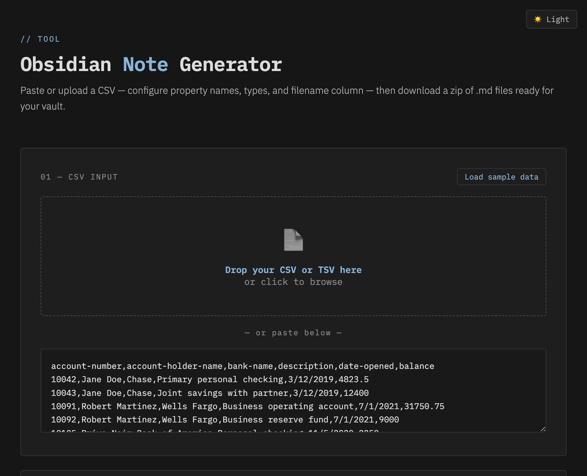
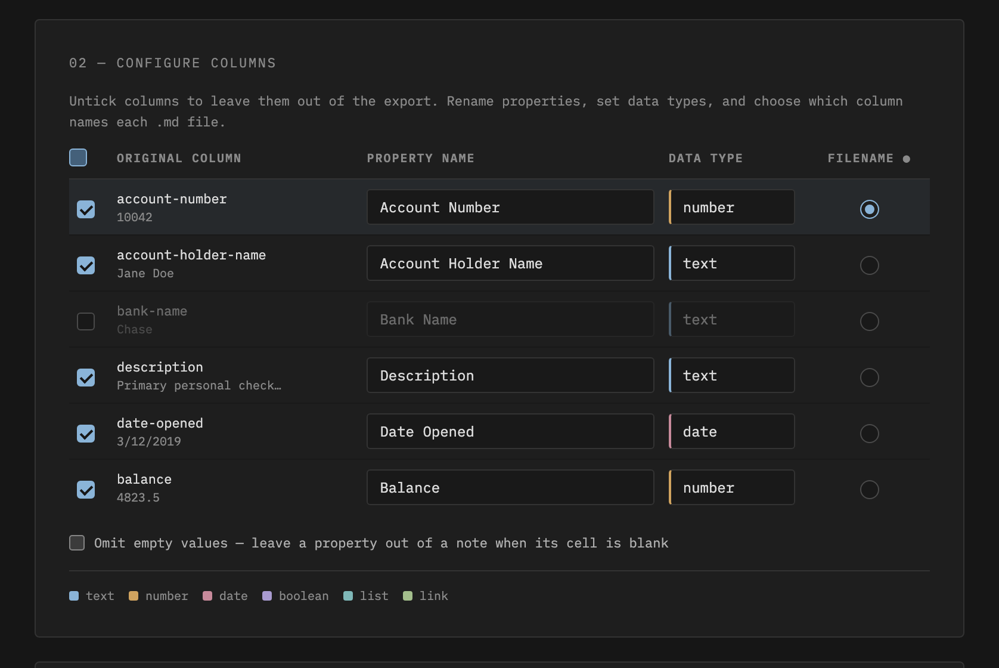
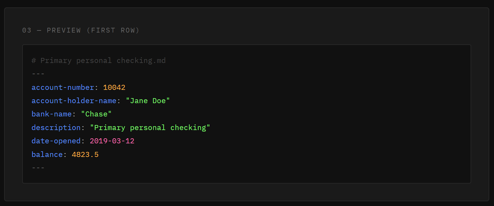
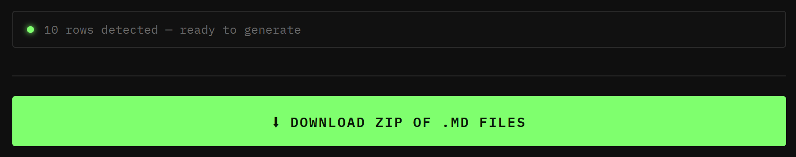

📦 This project is archived — there's a better option now
The CSV importer lives on inside Bases Toolbox, an Obsidian plugin. Its Import CSV as notes panel is a direct descendant of this tool's converter — same column mapping, property types, and date normalization — plus everything a plugin can do that a web page can't:
- Writes notes straight into a folder in your vault — no ZIP, no unzip, no drag-and-drop
- Optionally auto-creates a
.basefor the imported notes- Handles quoted fields containing newlines (a known limitation of this tool)
- Runs on mobile and desktop, inside Obsidian
This repo stays up as a read-only reference, and the hosted web version keeps working if you want a no-install, browser-only tool. It just won't be updated.
A lightweight, offline-capable browser tool that converts CSV or TSV
spreadsheet data into Obsidian-ready .md files with YAML
frontmatter — one file per row, downloaded as a ZIP.
No install. No account. No internet required once saved locally. Open the HTML file and go.
🌐 Use it online: grub-basket.github.io/CSV-to-Obsidian-Properties-for-Bases — no download needed. Hat tip to @fork-archive-hub, whose fork was quietly serving this on GitHub Pages before the original repo got around to it.
Need to go the other way? Try the companion tool Bases to CSV — a web app that takes a folder of Markdown files and exports a single
.csvyou can open back in Excel. Handy as an escape hatch if Obsidian ever breaks, since an Obsidian Base is really just a YAML view/query definition — the actual data lives in each note's frontmatter, not in the Base itself — so there's no built-in way to get a plain spreadsheet back out.




account-holder-name → Account Holder Name),
and you can rename any of themtext, number, date,
boolean, list, or link, each
formatted correctly in YAMLMM/DD/YYYY, D-M-YYYY, written month names, and
Excel serial numbers to YYYY-MM-DD automatically.md file's namejszip.min.js is saved locallyKeep these files in the same folder:
obsidian-note-generator/
├── obsidian-note-generator.html ← open this in your browser
├── converter.js ← the conversion logic
├── theme-switch.js ← dark/light theme toggle
├── styles-dark.css ← dark theme
├── styles-light.css ← light theme
└── jszip.min.js ← bundled locally for offline useTo go fully offline, also remove the Google Fonts
@import line at the top of both CSS files. The fallback
fonts are monospace and sans-serif (Courier
New / Arial on Windows, Menlo / Helvetica on Mac).
1. Open obsidian-note-generator.html in
any modern browser.
2. Load your data — either drag your
.csv or .tsv file onto the drop zone, or paste
the raw CSV text directly.
3. Configure columns — for each column detected from your header row:
.md file4. Check the preview — rows render as live YAML, and the ◀ ▶ buttons step through every row so you can catch issues before generating.
5. Click Download — a
obsidian-notes.zip file downloads containing one
.md file per row.
6. Unzip into your vault — drop the files into the relevant folder in Obsidian.
| Type | YAML output | Notes |
|---|---|---|
text |
property: "value" |
Default. Handles commas and special characters safely. |
number |
property: 1234 |
Unquoted. Falls back to quoted text if the value isn't numeric. |
date |
property: 2024-03-15 |
Normalizes multiple input formats to YYYY-MM-DD. |
boolean |
property: true |
Recognizes true, yes, 1 as
true; everything else is false. |
list |
property:- "value" |
Multi-value list. Cell values are split on semicolons or commas, one list item each. |
link |
property: "[[value]]" |
Wraps the value in Obsidian internal link syntax. |
When a column is set to date, the tool attempts to parse
and reformat to YYYY-MM-DD:
| Input format | Example | Output |
|---|---|---|
| Already correct | 2024-03-15 |
2024-03-15 |
| US (Excel default) | 3/15/2024 |
2024-03-15 |
| European | 15-3-2024 or 15.3.2024 |
2024-03-15 |
| Written month | March 15, 2024 |
2024-03-15 |
| Short month | Mar 15 2024 |
2024-03-15 |
| Excel serial | 45366 |
2024-03-15 |
If the value can't be parsed, it's passed through as-is rather than corrupted.
.txt) to avoid the issue entirely.number so Obsidian treats them as numeric properties. Make
sure the values contain no letters or symbols.link type to
wrap values in [[...]]. If you need multiple links in one
property, use list type and manually format values as
[[Note Name]] in your source data.Account Holder Name),
which display nicely in Obsidian. Note that names with spaces need
bracket syntax in Obsidian Bases formulas:
note["Account Holder Name"]. If you write a lot of Bases
formulas, rename them to lowercase-with-hyphens style instead.The repo already ships jszip.min.js locally and the HTML
references it with a relative path, so offline use works out of the box:
download/clone the folder, open
obsidian-note-generator.html, done.
Optionally remove the Google Fonts @import line at the
top of styles-dark.css and styles-light.css to
drop the last external dependency (fonts fall back to your system's
monospace / sans-serif).
See sample-accounts.csv for a
ready-to-use test file.
This tool gets data into Obsidian. Its companion, Bases to CSV, gets it back out:
.csv file.2026.04.03-04
MIT. Bundled JSZip is dual-licensed MIT/GPLv3 and used here under MIT.